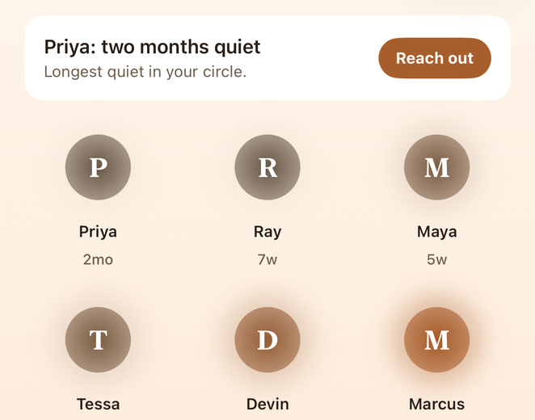

Monday
Write about one person. Nobody reads it.
One small rep a day, aimed at one person by name. Two minutes against a drift nobody chose.
You thought of someone before you finished that line. Neither of you meant it to be this long.
It did not end in a fight.
It ended in a hundred ordinary days where you meant to text and did not, and then it had been long enough that texting felt strange.
The gap is not the problem. The gap is only how long it has been since either of you went first.
The longest study of adult life has followed the same families since 1938. That is 88 years of evidence that close relationships, more than money or fame, are what keep people well.
Stays in this tab. Nothing is sent, nothing is saved.

Four days ask for a message. Saturday asks you to show up. Two ask for nobody at all.
Monday
Write about one person. Nobody reads it.
Tuesday
A message to someone who went quiet.
Wednesday
Write again. Same person, or a different one.
Thursday
A question that gets past small talk.
Friday
The thanks you keep postponing.
Saturday
See someone. No text required.
Sunday
Your pick.

Monday
What did they teach you that you still use?
Rarely advice. Usually a habit I picked up without ever noticing whose it was. He wrote the hard email before coffee, every time.
Nobody reads this. Not us, not anyone.
The next day it hands you this.
Hey you, you have been on my mind this week. You taught me to write the hard email before coffee. How have you been?
Your sentence, carried across whole. You send it.
You did not type a name, and this page still made no request. Scroll back and try it: nothing will change about that.
Reunited never asks for your address book. You hand it one person at a time through Apple's own picker, so it cannot read the rest. And the model that helps you word a reply runs on the iPhone itself, which is why the message you paste in never leaves it. The privacy policy says the same thing at length, and it is short.

Nothing you get for free ever moves behind the paywall. That is a pledge, in writing, and this is the list it covers.
Free
No trial to lapse. Nothing to cancel.
Hearth
$39.99 a year after a 7-day free trial, or $89.99 once. US prices.


Reunited is in private beta ahead of its App Store release. Leave an email or a phone number and you will hear when a spot opens.
Goes straight to support@reunited.day. One email when a spot opens, nothing else.
© 2026 Foresight Solutions Group LLC. Made in New Jersey. Spot listings in Plan something come from Yelp or Apple Maps.